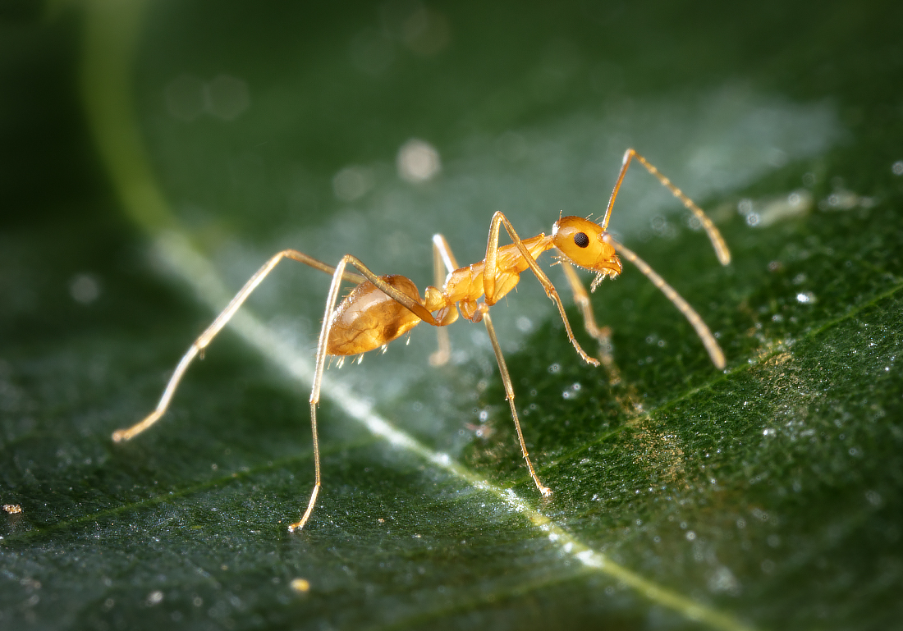

Gene: Mitochondrion
All animals have a mitochondrial genome which is smaller than the main genome and passed down along the maternal line
ATGAATAAATGACTTTATTCAACTAATCATAAAGATATCGGCATTCTATATTTCTTATTTGCAGTTTGAGCCGGAATAATTGGATCTTCTATAAGAATAATTATTCGTTTAGAACTAGGGTCATCTAATGCACTAATTAATAATGATCAAATTTATAATTCAATAGTTACTAGGCATGCATTTATTATAATTTTCTTTATAGTTATGCCATTTATAATTGGAGGGTTCGGAAATTTTCTTGTTCCTTTAATACTTGGTTCTCCAGATATAGCCTATCCTCGAATAAATAATATAAGTTTTTGACTCTTACCCCCCTCACTCTCTTTACTTTTATTAAGTAATTTTATTAATGATGGAACTGGAACTGGGTGAACAGTCTACCCTCCCTTAGCCTCTAATATATTTCATAATGGCCCTTCAGTAGACCTAACAATTTTTTCTCTTCATATTGCCGGAATATCTTCTATTCTAGGGGCTATTAATTTTATTTCTACAATCTTAAACATACATCACAAATTTCTTTCAATTGATAAAATACCCCTCTTAGTTTGATCAATTTTCATTACAGCAATTCTCCTCCTTCTGTCTCTCCCAGTTTTAGCCGGAGCAATTACAATACTTTTAACAGAT
View GenBank Entry
Organism: Yellow Crazy Ant (Anoplepsis gracilipes)

Yellow Crazy Ants are invasive pests that be particularly destructive in the Wet Topics. Yellow Crazy Ants are also notable for their unique genetic system in which males (drones) are a mosaic of cells containing two completely different genome types. They are the only animals known to exhibit this phenomenon
JCU Researchers are working with the Wet Topics Management Authority to develop genetic methods to track and trace infestations